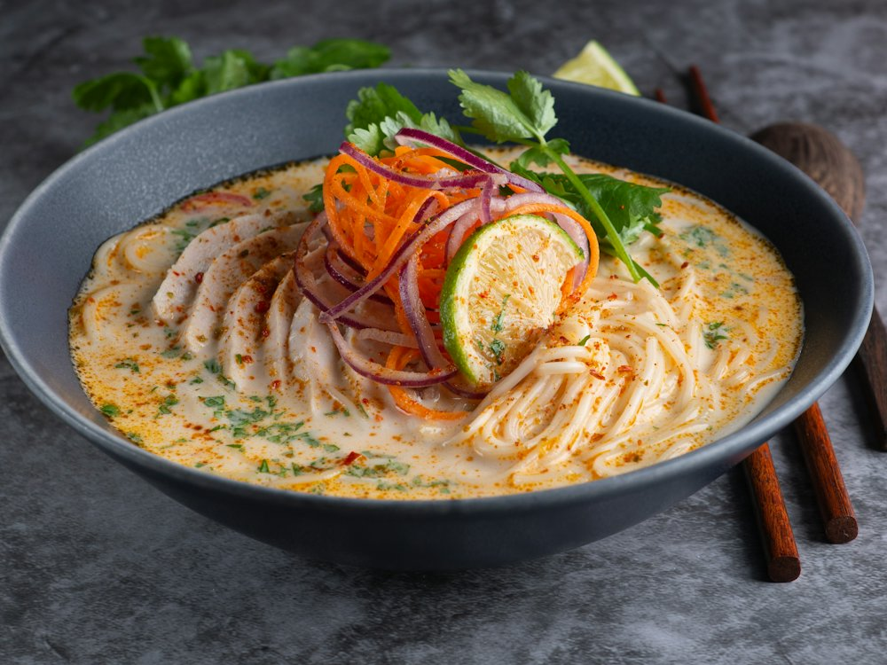

Lапша Bar & Wok
Ресторан · Японская, китайская · Алматы
Рейтинг
★ 4.4
894 оценок
Год открытия
нет данных
в открытых источниках не нашли
Средний чек
10 000 ₸
по данным 2ГИС
Адрес и часы
📍 ул. Каппарова, 378, Алматы · Медеуский район
🕒 пн-вс 12:00-02:00
О заведении
Паназиатский бар с кальянами.
Меню
Рядом в справочнике
Luck in Dumplings · Luckee Yu · Luffy coffee & Art1 · Mad Murphy's Irish Pub · Mado · Magic Coffee